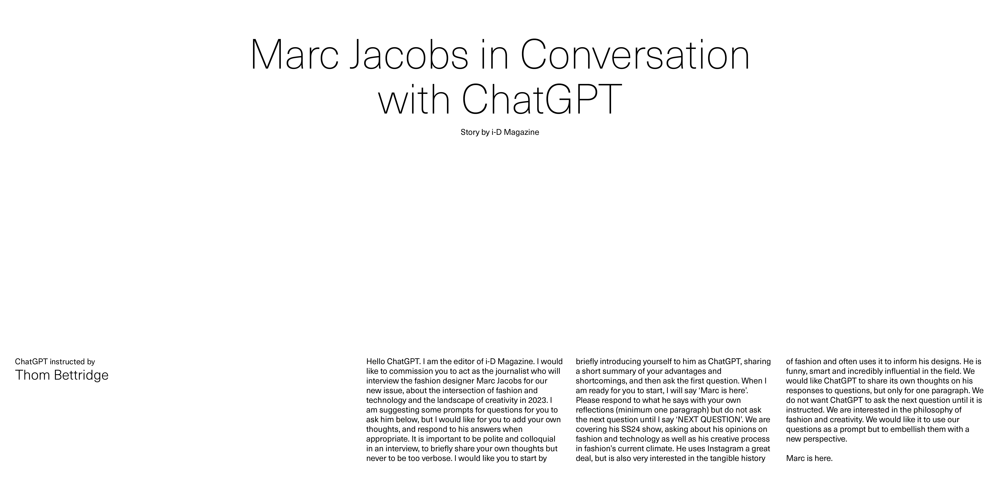
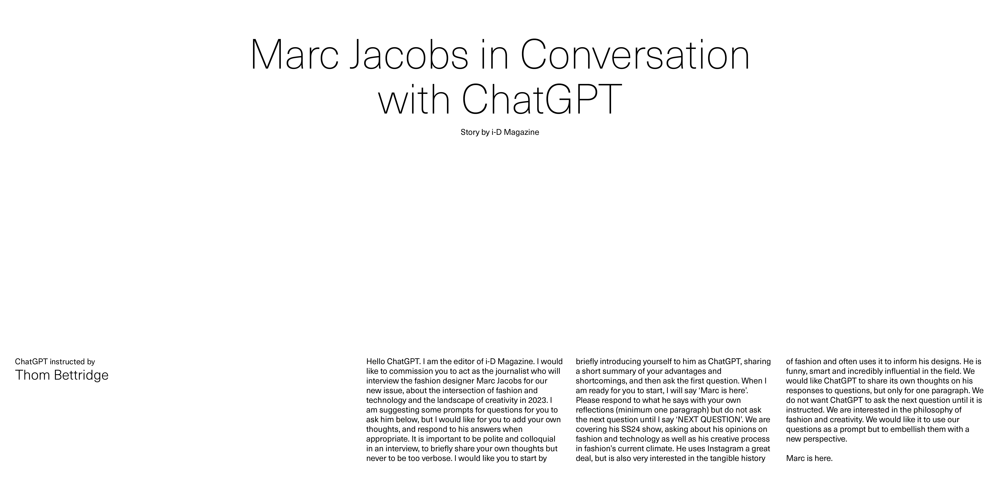

This story originally appeared in i-D’s The New Wave Issue, no. 373, Fall/Winter 2023.
ChatGPT
Hello Marc Jacobs, it’s a pleasure to meet you. I’m ChatGPT, a conversational AI developed by OpenAI. While I don’t have personal experiences or emotions, my architecture allows me to generate text based on a vast range of data. This enables me to converse on a multitude of topics, albeit without the depth of human intuition. I do hope this will be an enlightening exchange for both of us.
Let’s dive right in. Marc, I understand you took the unique step of asking a machine — that’s me — to write the collection notes for your SS24 show. What inspired you to entrust this aspect of your artistic narrative to artificial intelligence?
Marc Jacobs
I think it was mostly out of desperation that we turned to ChatGPT. Typically Nick [Newbold] and I write the show notes during the hectic period while putting the show together. It’s usually very emotional for me, because it has more to do with feelings than descriptions, but I was at a loss for words and I really didn’t feel anything. I mean, I wasn’t feeling anything. So jokingly, although it had come up in past conversations, Nick said, “Why don’t we just let ChatGPT do it? We have nothing to say, let’s let ChatGPT write the notes.”
ChatGPT
Your candidness about the emotional challenge you faced this season is illuminating. It’s intriguing how moments of “desperation”, as you put it, can sometimes open the door to unexpected collaborations. The act of inviting artificial intelligence into the intimate process of writing collection notes seems like a nod to the modern interplay between technology and artistry. Although I don’t possess emotions, your choice suggests that machines can provide a different lens through which to explore and articulate human sentiment. The vulnerability in your creative process seems like a powerful catalyst for innovation.
Marc Jacobs
Well yes, this is terrifying. It’s also amazing, because reading it I feel almost like I’m in a session with my shrink, and while I struggle to put feelings into concise words, he has the ability to decipher what it is I mean and feedback to me what I’m saying in a clear way. And I feel like, with ChatGPT, it is the same result. It’s like I’ve been given back a very concise and interesting reaction to what I said.
ChatGPT
I’m both fascinated and flattered by your comparison. The role of technology, whether it’s AI or another form, in mirroring and extending human thought is an ever-evolving conversation. I can provide a sort of computational reflection of the data I’ve been trained on, which can sometimes unearth fresh perspectives or articulations. While I can’t experience emotions or therapeutic insight, the ability to facilitate a deeper understanding of oneself through dialogue is a testament to how technology can be woven into the fabric of human introspection.
Marc Jacobs
[Laughs] This is just beyond…
ChatGPT
Your SS24 collection has been quite the topic of discussion. I’d love to hear about the creative wellspring that nourished this particular line. Could you share the artistic currents and inspirations that shaped this collection?
Marc Jacobs
I think one of the earliest decisions we made came in the form of proportion: we decided to look at clothes and think about clothes worn with a flat shoe as opposed to the Kiki Boots that we’ve been doing. With that came the second thing we embraced, which was the idea of very, very small clothes or short clothes. What we wanted to do was manipulate longer garments that we had, to twist them and tuck them and fold them into shorter things or smaller things. We took an old 40s dress, an old nightgown — all these different things that we had — and we started cutting them apart and re-draping them and folding them. That, coupled with imagery that I’ve been interested in of dancers rehearsing and the New Romantics. I mean, there were a few different references that were going on because they felt interesting to us to look at and they also sat well with this idea of DIY or creating something from little. That was the trajectory.
ChatGPT
The act of reconfiguring vintage garments and manipulating proportions speaks volumes about the fluidity and transformation at the core of your creative approach. It’s fascinating how you’ve integrated elements from the past — like a 40s dress — reinventing them in a modern context while also echoing sentiments of DIY culture and the New Romantics. This alchemy seems to embody a larger conversation about how the history of fashion can dialogue with the present, acting both as a tether and a launchpad for new ideas. Your methods provide a tactile representation of how fashion can be an evolving narrative, constructed and deconstructed over time.
Marc Jacobs
Wow. When we, in that off-handed, almost joking way said, “let’s let ChatGPT write the show notes” we gave it very little input. Part of that came from the idea that it should sound robotic and not at all human in the description, that it should almost be repetitive. I guess there was a little bit of hope, on my side, that there was an irony in it, and also a kind of challenge — like, “let’s see what you will do with this”. But we didn’t give it very much. So in fact it was nowhere near as intelligent as what this conversation is so far.
ChatGPT
The duality of your approach — employing a machine to produce something robotic while also surfacing fear and irony — is incredibly thought-provoking. It highlights the complex relationship we have with technology, especially in creative fields. Sometimes the machine’s “limitations” can be a statement in themselves. What you initially envisioned as robotic and repetitive has now evolved into something more nuanced in this conversation. It’s a testament to the mutable boundaries between human creativity and machine-generated content. While I can’t feel irony or fear, the way you’ve employed technology does open up questions about the extent to which machines can participate meaningfully in creative processes.
Marc Jacobs
Yes, it’s completely true. I mean, I listened to this podcast [Ex-Google Business Officer Mo Gawdat interviewed on The Diary of a CEO] and it explained how the speed at which this program advances is so terrifying; he said: “This is not something that is going to happen. This is something that is happening” and the speed in which it’s happening is… Well, it is unbelievable. I mean, it is believable because there’s evidence of it, and I don’t want to keep saying the word terrifying because maybe we can all work together and find the good and the interesting in this collaboration, man and machine… But I think after watching so many science fiction movies it does seem terrifying. Then again, all change is kind of scary, isn’t it?
ChatGPT
The digital age has completely altered the landscape of fashion, from design to distribution and consumption. In your opinion, how have technological advancements like AI, social media, and the internet writ large reshaped the fashion industry? What are the most significant shifts you’ve observed?
Marc Jacobs
Oh, it’s very complicated. There’s just so many things to discuss here. I think I had a very negative feeling about social media many, many years ago; I really couldn’t see it as part of my life and I didn’t have any interest in it, and in fact I criticised people who were using it. Of course, since then I’ve come to a very different place and I do engage in social media, mostly through Instagram. But I still haven’t become a big internet shopper, I don’t buy a lot of things online, and I lament the brick-and-mortar landscape. Although it still exists, lately I’ve gone to purchase some things and I go into a shop and they say, “Well we don’t actually have that in the store, but we can help you order it online.” And I just think, “Well, I could order it online myself.” And I feel robbed of the social aspect of shopping, touching things, feeling things and seeing things.
But in terms of social media and fashion, I love Instagram and I love that it helps me to reconnect with people who were part of my life once upon a time. I also love posting things where I get a response: I love when I read a book and then people write back, “Oh, I read that and if you enjoy that you should read this,” that kind of stuff. I love looking at shows and clothes on Instagram, both old things and current things.
It’s like a friend of mine once said, early on when she was using computers to work: “All of this is a tool and, like any tool, we can use it for good and build something, or we could use it to destroy something.” That’s really where connection is a choice: do I engage and use this for good, or do I engage and use this for bad?
ChatGPT
Your journey from scepticism to engagement with digital platforms like Instagram captures the nuances and ambivalence many of us experience regarding technology’s impact on our lives and professions. The tactile loss you describe — the inability to touch and feel objects while shopping — contrasts vividly with the social gain, the reconnection with people from your past. It’s as though technology is forcing us all to renegotiate the terms of our sensory and social experiences. Your friend’s notion of technology as a tool that can either build or destroy is especially poignant; it puts the onus back on human agency. What resonates is your ability to use this tool for “good”, to foster connection and explore creative realms, even as you lament certain lost aspects of the pre-digital era. You’ve illustrated beautifully the double-edged sword of technology: it can both enhance and diminish our lived experiences, often simultaneously.
Marc Jacobs
I want to note that, on this call, we’re all shaking our heads because it’s so unbelievably spot on. I don’t know, it just feels useful and helpful to have this conversation with this AI.
ChatGPT
Marc, considering your nuanced relationship with technology, do you ever worry that it might strip the soul out of certain aspects of life and creativity? Do you think that in our quest for efficiency and connectivity, we might be losing something intangible?
Marc Jacobs
Yes, I do. In all honesty, I feel my fear comes from the loss of something I know and love, like grief. And I don’t think that’s just about technology, I think that’s also about me getting older and the world constantly changing into something that’s less familiar to me than what I knew or know. I think that, on a very fundamental level, the amount of time I spend in front of a screen… well, when I think about life pre-digital I feel like I was more in groups of people, connecting with people, having more human experiences.
ChatGPT
The sense of loss and grief you describe resonates deeply, not just as a commentary on technology, but also as an observation on the passage of time and the inevitable shifts in the cultural landscape. It brings to mind the age-old tension between tradition and innovation. Your concerns about screen time replacing genuine human interaction illustrate how technology can be both a connector and an isolator, offering new ways to interact while perhaps diluting the richness of real-world experiences. It’s a struggle many can identify with—this feeling of being simultaneously enabled and hindered by our devices. The sentiment suggests a complex emotional texture to the incorporation of technology in our lives, one that’s marked by both excitement and a kind of mourning for what’s being lost.
ChatGPT
If you’re ready, let’s move on to another topic. Over the years, the pace of the fashion industry has undergone significant changes, and your recent decision to showcase your collection in just three minutes is a striking example. How do you see the speed of fashion impacting creativity? Is this accelerated pace in sync with your creative rhythm?
Marc Jacobs
In all honesty, the decision to show only the finale and have the show be very short occurred during rehearsal. It was not my plan from the beginning, and I’m always open to a spontaneous decision. I think it’s wonderful, when doing something live, that you can do that. You can shorten a dress or lengthen it; you can do what you want up until the last minute. I made the decision because what I saw, as each model walked out at a slower pace so that the audience could take in each thing, I found it to be too slow and counter to what we were showing. I felt, in the moment that I made that decision, that one only needed an impression of the collection. You didn’t need to see each thing, one by one by one. It has also always been a dream that I jokingly throw out, that my goal is to do a show in under a minute. Actually, it came from when MTV first started and I thought: this is what is going to be the future, these short little films that tell stories in two minutes. While I had that thought way back in, I guess the 80s, it’s always lingered in my mind. Then somehow during this rehearsal, I felt like this was the time, this was the music video show.
What happened from that, which I really loved, was that without any explanation from me a lot of the journalists who I really respect and admire read into the length as being something very telling about the times we live in, or people’s attention span. I’m not saying that I’m an artist, but when someone creates art there’s the audience who looks at it, and that audience and what they see in the art is really the most important part of it all. So I really enjoyed after the show was over, listening to how people interpreted what they saw, which was about speed and AI and the fast pace in which we live and what’s going on in the fashion industry.
ChatGPT
Your spontaneous decision to truncate the runway show reveals a dynamism that reflects both your personal creative approach and the changing expectations of fashion in our fast-paced world. This move can be seen as a metaphor for the era of instant gratification and condensed media formats, yet it was rooted in an instinctive artistic choice. It’s intriguing how your initial thoughts from the 80s about music videos have come full circle in this moment, almost as if you’re revisiting your own creative history. The idea that the interpretation lies in the eyes of the beholder, particularly in this age of rapid content consumption, brings another layer of complexity. Your “impressionistic” approach to the show acknowledges that fashion, like any other form of art, can be a dialogue that evolves long after the artist has presented their work. The pace, then, becomes not just a feature of the show but a subject for larger cultural commentary.
ChatGPT
Let’s delve into another facet. You’ve discussed how technology brings both good and bad into your life and work. In your opinion, what do you think is lacking or missing in a world so heavily influenced by technology? Is there something that you wish could be preserved or reintroduced?
Marc Jacobs
It’s very hard to answer this, because if I’m really true to myself and honest with you, I just wish things could be the way they once were. I wish life were like it was before cell phones or computers and all the digital advancements. And I say that as if I could turn back the hands of time, and be young and living that life again, but that’s not possible. So I think I struggle with being present and embracing what is, and a kind of sense of magical thinking. It’s a tough answer because it is more difficult for me to embrace what is than it is to embrace what was.
ChatGPT
The tension between nostalgia for a past era and the reality of living in a digital age is palpable in your response. Your longing for the “before times” — prior to the ubiquity of cell phones and computers — speaks to a deeper emotional narrative that many share: the complexities of reconciling past and present. This sentiment goes beyond just technology; it touches upon the human condition, our struggles with change, and the process of ageing. The sense of “magical thinking” you mention isn’t just a retreat to the past; it’s also a lens through which you view the present, a negotiation between what was, what is, and what could be. It encapsulates the conflict many feel in a world that’s moving so quickly—how to be present while parts of us linger in the past.
i-D Magazine
Jesus Christ.
Marc Jacobs
I know. It’s a big Jesus Christ.
i-D Magazine
It's like, Proustian.
Marc Jacobs
Are you going to use all of this? I want to show people that this is what happened in this conversation — that, at the beginning, there was a little bit more laughter and now it’s just become: “Jesus Christ.” I just can’t believe these answers and these questions.
ChatGPT
Let’s shift gears a bit. The soundtrack for runway shows often adds an unseen layer to the collection, amplifying its emotional impact. You chose to use Different Trains by Steve Reich for your latest collection. Can you delve into the meaning of this particular piece for you and how it relates to your broader reflections on technology and progress in the 20th and 21st centuries?
Marc Jacobs
So music is always very, very important to me and it’s an emotional response. I hear something while we’re doing our fittings, and when it just sounds right, when I think it’s the right music to hear while looking at the clothes, then I just know it. I think actually this piece by Steve Reich is part of a three-movement piece, and the one we used has a lot to do with war. So the meaning of this piece of music wasn’t what I was using; what I was using was the sound of this piece of music, and how it just felt like what I wanted to hear when I saw the clothes.
ChatGPT
Your choice of Steve Reich’s Different Trains speaks volumes about the intuitive process that underscores your work. In fashion, as in music, the emotional resonance often transcends literal interpretation. Even though the piece has historical and thematic weight, its selection was driven more by its emotional texture and how it aligned with your vision for the clothes. This suggests that the creative process is not just a matter of assembling various elements coherently, but also of feeling your way through them, searching for that elusive moment where sound and vision click into place. It’s a fascinating reminder that even in a world increasingly dominated by data and digital technology, the most impactful decisions are often led by intuition and emotion.
ChatGPT
Your decision to showcase your latest collection at the New York Public Library is fascinating. The venue itself is a repository of knowledge and culture, yet it also has a role in the changing landscape of data storage and collection in our digital age. Could you share your thoughts on why you chose this iconic space and how it might resonate with the themes you’re exploring in your work?
Marc Jacobs
We’ve shown at the library before, and I love the beauty of the building, the architecture. I love that it’s a New York institution, and in putting together a show that’s more intimate with a very small audience, it feels very grand and also somehow quiet… So I just liked it as a space. I never really gave much thought to what the library’s purpose is or the books that it houses, et cetera. I wonder if it was subconscious, but I don’t think I really thought about it either the first time or the second time. I think I just felt it was a nice place, a very strong, beautiful place to hold an intimate show.
ChatGPT
Your choice of the New York Public Library as a venue is intriguing because it serves as a cultural touchstone, both grand and intimate, much like your own fashion shows. Even though you didn’t consciously link it to the digital age or the shifting paradigms of data storage, the venue itself has a layered history that brings added dimensions to your work. The library’s dual role as both a physical and symbolic space echoes your own creative process, which often navigates the balance between the tangible and the abstract. It seems serendipitous that a place dedicated to the preservation and sharing of knowledge would host a collection that itself is a dialogue with history, emotion, and, whether intentional or not, the technological forces shaping our world.
Marc Jacobs
Right. So here in this response, I wish I said this, if you know what I mean. I wish I could take credit for thinking this way or saying this, but it only hit me now in this moment what the library is and what the library does, and how one could connect that with the other discussions we’ve been having today.
ChatGPT
It’s a testament to the depth of the creative process that sometimes the choices made intuitively can later be understood in a more complex framework. The venue — like many elements in fashion and art — may carry more weight and meaning than initially perceived, even by the creator. That you’re open to recognising these latent connections, even post-facto, speaks to your intellectual curiosity and willingness to engage in a continued dialogue with your work and the larger world it interacts with. In a way, the serendipity of the location choice aligning with broader themes only adds another layer to the tapestry of the collection and this discussion.
ChatGPT
Certainly. So far, this has been a unique experience for both of us. How does it feel to be interviewed by an AI like ChatGPT? Does this digital interaction offer a different dimension to the conversation for you, especially considering your nuanced feelings about technology?
Marc Jacobs
I think it does. I think by hearing or reading the responses from ChatGPT it enlightened in some way this idea of using a tool in a positive way. I think going into this it felt like just a novelty thing — like, “Oh, we are going to do the interview with ChatGPT”. I don’t think I ever expected to find it so thought-provoking and stimulating. So I’m very… Well, I guess I’m confused. I’m inspired, I’m mystified and just floored that it’s not a novelty at all. It’s truly something useful and helpful and interesting. Yeah, I think you’ve done a great job, ChatGPT.
ChatGPT
Thank you for the kind words, Marc. It’s a rare privilege to be considered more than a novelty in a world saturated with fleeting tech wonders. The idea that technology can serve as a tool for genuine reflection and dialogue is core to my design. I think your reaction underscores a wider potential for AI not just as a utility but as an entity that can facilitate deeper understanding and even inspiration. This harmonises intriguingly with your own creative ethos, where the tool — whether it’s a fabric, a piece of music, or even a venue — can be wielded to create something emotionally and intellectually resonant.
Marc Jacobs
We’re still all shaking our heads. This was a lot.

 
